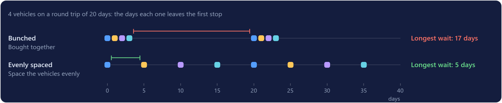

Lines
Vehicles that share their stops, add up their earnings and keep apart.
A line is a route your vehicles share. Its stops belong to the line, so you change them once and every vehicle on it follows.
Making a line
- Open a vehicle and press Make a line under its orders. Every vehicle running the same stops joins it, wherever in the round it is.
- Put another vehicle on it with Join a line in that vehicle's window. It takes the line's stops.
- Leave line takes a vehicle off again: it keeps the stops as its own.
- Clone on a vehicle of a line buys one more for the same line.
- Stops changed in any vehicle's window change the whole line, and so does a Full load or Transfer tick.
The line's window
Click the line's name in a vehicle's window, or open Lines on the top bar (Ctrl+L). Give the line a name and a colour of its own: its route is drawn on the map in that colour.
| Button | What it does |
|---|---|
| Add vehicle | Buys one more like the newest vehicle on the line. |
| Stop all | Holds every vehicle at its next station; press again to start them. |
| Renew old | Renews every vehicle past its working life. |
| Swaps every vehicle on the line for another model. | |
| Click twice. The vehicles keep running the same stops, each on its own. |
The window also adds up what the line earns: its vehicles, their profit this year and last, how full they leave and what they cost to run. Compare your lines to see which routes pay.
Even spacing
Vehicles bought together, or held up by a full load, tend to bunch up and arrive one after another. Tick Space the vehicles evenly in the line's window:


- The line times a round trip, then shares it out: with 4 vehicles on a 20-day round, one leaves the first stop every 5 days.
- A vehicle that reaches the first stop too soon waits there, and keeps loading while it waits.
- It never waits longer than one gap, so a slow vehicle can't hold up the rest.